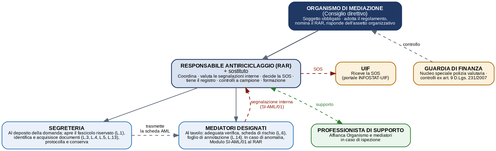

Nella mediazione gli obblighi antiriciclaggio non gravano su tutti allo stesso modo. Seleziona il tuo ruolo per orientarti.
Organismo di mediazione (ODM) soggetto obbligato›
È il soggetto obbligato “principale”: ai sensi dell’art. 3, c. 5, lett. g) D.Lgs. 231/2007 ricade nella disciplina; il rapporto contrattuale intercorre con le parti e il fascicolo è custodito dall’ODM (art. 11 D.Lgs. 28/2010). Co-obbligato è il legale rappresentante. Deve dotarsi di documento di autovalutazione, modulistica, formazione e responsabile della conservazione.
Mediatore designato posizione controversa›
La Guardia di Finanza, nelle verifiche 2025-2026, lo considera soggetto obbligato ex art. 3, c. 5, lett. g). Il CNF e parte della dottrina ritengono invece obbligato l’Organismo, qualificando il mediatore come ausiliario (art. 2049 c.c.). In ogni caso opera l’esonero della Regola Tecnica n. 2 CNF (avallata dal Comitato di Sicurezza Finanziaria–MEF) e l’obbligo più compatibile resta la sola segnalazione di operazioni sospette.
Avvocato che assiste una parte in mediazione esente›
L’attività di assistenza e difesa in mediazione è esclusa dagli obblighi antiriciclaggio professionali (Regola Tecnica n. 2 CNF; art. 3 c. 4 lett. c e art. 35 co 5 d.lgs. 231/2007). Restano fermi i soli obblighi deontologici (art. 62 C.D.F.). Gli obblighi possono però sorgere se l’incarico sfocia in un’operazione tipica dell’art. 3 c. 4 lett. c) (es. trasferimento immobiliare): in tal caso usa comunque i modelli sottostanti.
Negoziazione assistita (avvocato) esente›
La convenzione di negoziazione assistita (D.L. 132/2014) è attività di difesa e assistenza: è esclusa dalle operazioni dell’art. 3, c. 4, lett. c) (Regola Tecnica n. 2 CNF) e gode dell’esonero dalla segnalazione per le informazioni acquisite «anche tramite convenzione di negoziazione assistita» (art. 35, c. 5; già art. 12). Gli obblighi possono riattivarsi solo se l’avvocato compie o assiste un’operazione economica autonoma (es. trasferimento immobiliare nella negoziazione familiare).
OCC e gestore della crisi da sovraindebitamento regime distinto›
Vanno distinti i due obblighi. Adeguata verifica e conservazione: secondo il CNDCEC l’OCC come organismo non è incluso tra i soggetti obbligati e il gestore non vi è tenuto quando l’incarico è conferito dal referente dell’OCC (e non da un cliente). Segnalazione (SOS): il gestore resta invece tenuto a segnalare alla UIF quando sa o sospetta operazioni di riciclaggio o di finanziamento del terrorismo. In sintesi: esonero da adeguata verifica, ma non da SOS. Posizione fondata su prassi/pareri, in materia interpretativa.
Su cosa si basa la Guardia di Finanza (presupposti) ›
Potere di controllo: il Nucleo speciale di polizia valutaria verifica i soggetti obbligati non vigilati (art. 9 D.Lgs. 231/2007), con intensità graduata sul rischio.
Presupposto soggettivo: tratta l’avvocato-mediatore come soggetto obbligato (art. 3, c. 5, lett. g).
Parametro: gli indicatori di anomalia UIF del 12 maggio 2023 (dal 1° gennaio 2024).
Tempo: controllo retrospettivo, ma prescrizione in 5 anni (art. 28 L. 689/1981) e favor rei sui fatti più vecchi.
La replica: l’obbligo è dell’Organismo, che custodisce i fascicoli (art. 11 D.Lgs. 28/2010); esonero della Regola Tecnica n. 2 e dell’art. 35, c. 5; incertezza interpretativa.
L’ispezione: due ipotesi (mediatore o Organismo) ›
Profilo
Presso il mediatore
Presso l’Organismo
Chi risponde
Il mediatore (con difensore/RAR)
Legale rappr., RAR, segreteria
I fascicoli
Non detenuti (art. 11): nulla da esibire
Custoditi: si esibiscono, dimostrando la corretta tenuta
Condotta
Dichiarare la non disponibilità; eccezioni a verbale; riserva di memorie
Collaborare esibendo l’assetto (regolamento, RAR, autovalutazione, formazione) e i fascicoli; eccezioni a verbale
Eccezioni di diritto
Comuni: obbligo dell’Organismo; esonero difensivo (R.T. n. 2; art. 35 c. 5); incertezza interpretativa sull’estensione alla mediazione
La linea difensiva è la stessa; cambia la condotta materiale: il mediatore non esibisce ciò che non detiene, l’Organismo esibisce e dimostra la correttezza del proprio assetto.
Chi fa cosa, quando, su quali documenti
Ripartizione degli adempimenti tra Organismo/RAR (assetto e back-office) e mediatore (al tavolo). I codici L.x rinviano ai modelli del fascicolo (Allegato L del dossier).
Adempimento
A chi compete
Quando
Doc.
Informativa AML/privacy
Mediatore (consegna); Organismo (predispone)
Primo incontro
L.13
Identificazione e adeguata verifica
Mediatore (esegue); Organismo (conserva)
Primo incontro
L.3
Titolare effettivo (persone giuridiche)
Mediatore
Primo incontro
L.4
Dichiarazione del cliente (art. 22)
Mediatore
Primo incontro
L.5
Scheda di valutazione del rischio
Mediatore
Primo incontro / aggiornamenti
L.6
Foglio di annotazione AML
Mediatore
Fine sessione
L.14
Segnalazione interna dell’anomalia
Mediatore (redige); RAR (valuta)
Appena emerge
SI-AML/01
Segnalazione operazione sospetta (SOS)
Organismo / RAR
Dopo la valutazione
UIF
Conservazione del fascicolo (10 anni)
Organismo
Dalla chiusura
L.1
Designazione del RAR · Autovalutazione · Formazione · Controlli
Organismo / RAR
Una tantum / periodici
L.2, L.9, L.10, L.11
Organigramma della funzione antiriciclaggio

Linee continue: struttura interna e coordinamento. Tratteggiate: flussi e soggetti esterni (segnalazione interna, SOS alla UIF, controllo della GdF, supporto in ispezione).Cosa trovi già nel fascicolo e cosa compili tu (con i moduli) ›
Già nel fascicolo (segreteria, al deposito): copertina (L.1), informativa AML/privacy firmata (L.13), adeguata verifica + documenti (L.3), titolare effettivo + visura per le società (L.4), dichiarazione del cliente (L.5), rischio preliminare.
Compili o aggiorni tu (mediatore, al tavolo): scheda di rischio (L.6, sempre), foglio di annotazione (L.14), integrazione dell’adeguata verifica per nuovi soggetti (L.3/L.4), SI-AML/01 se c’è un’anomalia (L.7).
L.4 — titolare effettivo per le società: chi detiene oltre il 25% o il controllo (artt. 18, 20, 22).
L.5 — dichiarazione del cliente: dati completi e veritieri (art. 22).
L.13 — informativa AML/privacy: da far firmare per presa visione (obbligo di legge, non consenso).
L.6 — scheda di rischio: basso/medio/alto, sempre, anche se basso (art. 15).
L.14 — foglio di annotazione: attesta gli adempimenti, da tenere fuori dal verbale.
L.7 (SI-AML/01) — segnalazione interna dell’anomalia al RAR, solo se serve.
Frasi da pronunciare (in presenza), prima di ciascun modulo:
L.13 — «Prima di iniziare le consegno e le illustro l’informativa antiriciclaggio e sulla privacy; le chiedo di firmarla per presa visione.»
L.3 — «Per gli adempimenti di legge devo identificarla: mi mostra un documento d’identità in corso di validità? Ne acquisisco copia agli atti riservati.»
L.4 — «Trattandosi di società o ente, le chiedo di indicare il titolare effettivo — chi detiene oltre il 25% o ne ha il controllo — sottoscrivendo questo modulo.»
L.5 — «Le chiedo di sottoscrivere questa dichiarazione, con cui conferma che i dati forniti sono completi e veritieri.» L.6, L.14 e L.7: nessuna frase alle parti (compilazione riservata).
Caso: locazione, valore € 85.000. Al deposito la segreteria apre il fascicolo e identifica; al tavolo il mediatore verifica, compila la scheda di rischio (medio) e il foglio di annotazione. Se in prosecuzione spunta un pagamento in contanti da un terzo non in causa (T3+T1), non chiude, aggiorna il rischio e compila il SI-AML/01 per il RAR.
Formule pronte: verificare e integrare il fascicolo
Frasi neutre da usare al tavolo (mediatore) e allo sportello (segreteria). Non si menzionano mai rischio, anomalie o segnalazioni.
Mediatore — verificare e integrare il fascicolo al tavolo ›
Verifica con le parti: «Prima di proseguire devo completare alcuni adempimenti di identificazione previsti dalla normativa antiriciclaggio (D.Lgs. 231/2007): vi chiedo di confermare i dati già forniti e, ove necessario, di integrare la documentazione. È un adempimento ordinario, che non implica alcun giudizio sulle persone o sull’operazione.»
Integrazioni di tua pertinenza (al tavolo):
Documento mancante/scaduto: «Mi occorre copia di un documento d’identità valido del Sig./della Sig.ra ___ e dell’eventuale rappresentante: può fornirla ora o farla pervenire alla segreteria entro ___.»
Titolare effettivo (società): «Per la società ___ devo acquisire la dichiarazione sul titolare effettivo: chi detiene oltre il 25% o esercita il controllo, con sottoscrizione del modulo.»
Dichiarazione del cliente (art. 22): «Vi chiedo di sottoscrivere la dichiarazione che i dati forniti sono completi e veritieri.»
Integrazioni di pertinenza dell’Organismo (custodia, conservazione, protocollazione): non si risolvono al tavolo. Annotale sul foglio di annotazione (L.14) e chiedile alla segreteria: «Si richiede di integrare il fascicolo riservato della procedura n. ___ con ___; la custodia e la conservazione decennale competono all’Organismo (art. 11 D.Lgs. 28/2010; art. 31 D.Lgs. 231/2007).»
A verbale (clausola neutra): «Le parti sono state identificate con documento d’identità in corso di validità; per le parti diverse da persona fisica è stata acquisita la dichiarazione sul titolare effettivo. I pagamenti previsti saranno eseguiti con strumenti tracciabili (art. 49 D.Lgs. 231/2007).»
Segreteria — al deposito della domanda ›
Apertura e informativa: «Al deposito della domanda apriamo, per gli obblighi antiriciclaggio (D.Lgs. 231/2007), un fascicolo riservato. Le consegno l’informativa sul trattamento dei dati da sottoscrivere per presa visione e le richiedo alcuni documenti e dati di identificazione.»
Documenti da chiedere:
Persona fisica: documento d’identità valido e codice fiscale dell’istante (e dell’eventuale delegato/procuratore, con procura).
Persona giuridica: visura camerale aggiornata, documento del legale rappresentante e dichiarazione sul titolare effettivo.
Operazione: oggetto e valore della controversia e modalità di pagamento previste, per la scheda di rischio.
Cosa apre/conserva la segreteria: copertina del fascicolo (L.1), scheda di adeguata verifica (L.3), titolare effettivo (L.4), dichiarazione del cliente (L.5), informativa firmata (L.13); protocollazione e conservazione separata. Annotazione interna: «Apro il fascicolo riservato n. ___, protocollo i documenti e ne curo la conservazione separata (art. 31); trasmetto la scheda al mediatore designato per la valutazione del rischio.»
Parte invitata: «Alla parte invitata che aderisce richiediamo i medesimi dati e documenti di identificazione prima del primo incontro.» Allo sportello nessuna valutazione di rischio: spetta al mediatore (e la segnalazione al RAR).
I sei obblighi in sintesi
1 · Adeguata verifica della clientela ›
Identificazione delle parti e degli esecutori, verifica dell’identità e del titolare effettivo (artt. 17-19). Soglia per le operazioni occasionali: 15.000 €; in caso di sospetto, a prescindere da ogni soglia.
2 · Titolare effettivo ›
Per le parti diverse da persona fisica: individuazione della persona fisica che detiene oltre il 25% o che esercita il controllo (artt. 18, 20, 22).
3 · Conservazione ›
Fascicolo riservato conservato per 10 anni (artt. 31-32), separato dal fascicolo ordinario della procedura.
4 · Segnalazione di operazioni sospette (SOS) ›
Invio alla UIF tramite portale INFOSTAT-UIF quando si “sa, sospetta o ha motivi ragionevoli per sospettare” (artt. 35-41), in forma riservata e senza informativa alle parti (divieto di tipping-off).
5 · Autovalutazione e scheda di rischio ›
Documento di autovalutazione generale (art. 15) e scheda di rischio per ogni pratica, anche nei casi di rischio basso.
6 · Formazione e presidi interni ›
Formazione periodica, procedure scritte, designazione del responsabile antiriciclaggio. Il registro/archivio è stato abolito (art. 69).
Cosa mettere a verbale, fase per fase
Il verbale di mediazione è coperto da riservatezza e inutilizzabilità (artt. 9-10 D.Lgs. 28/2010): in ottica antiriciclaggio non deve contenere valutazioni di rischio né riferimenti a segnalazioni. Annota solo clausole neutre; le valutazioni AML restano nel fascicolo riservato.
Verbale iniziale (primo incontro) ›
Dare atto, in forma neutra, dell’avvenuta identificazione delle parti e degli esecutori presenti e, per le persone giuridiche, dell’acquisizione della dichiarazione sul titolare effettivo (conservata nel fascicolo dell’Organismo). Esempio: «Le parti sono state identificate sulla base di documento d’identità in corso di validità; per le parti diverse da persona fisica è stata acquisita la dichiarazione sul titolare effettivo.» Nessun livello di rischio.
Verbale di prosecuzione ›
Dare atto, in modo neutro, di eventuali aggiornamenti rilevanti (ingresso di nuovi soggetti, modifica delle modalità di pagamento, nuovi trasferimenti). Se occorre rinviare per un’anomalia, usare formule neutre: «necessità di approfondimento», «supplemento di riflessione delle parti». Mai accennare a sospetti o all’antiriciclaggio.
Accordo ›
Inserire la clausola di tracciabilità dei pagamenti: «Le parti danno atto che i pagamenti previsti dal presente accordo saranno eseguiti con strumenti tracciabili, nel rispetto dei limiti all’uso del contante di cui all’art. 49 del D.Lgs. 231/2007.» Confermare l’identificazione. Nessun riferimento a valutazioni di rischio o a segnalazioni.
Da non scrivere MAI a verbale: il livello di rischio, gli indicatori di anomalia, l’esistenza o l’invio di una segnalazione (SOS) o di una segnalazione interna al RAR. Violerebbe la riservatezza (artt. 9-10 D.Lgs. 28/2010) e il divieto di tipping-off (art. 39 D.Lgs. 231/2007). Tutto ciò va nel fascicolo AML riservato.
Avvertenza. Strumento informativo e di supporto operativo: non sostituisce un parere legale. Stante l’incertezza interpretativa in atto, ogni scelta difensiva va valutata caso per caso. I dati inseriti restano nel tuo browser e non sono trasmessi ad alcun server.
Motore trigger UIF — intervista al mediatore
Rispondi sui sette segnali T1–T7 percepiti al tavolo. Il motore li mappa sugli indicatori del Provvedimento UIF 12 maggio 2023, segnala le combinazioni che integrano il “dubbio ragionevole” e prepara una bozza di motivazione per il Responsabile Antiriciclaggio (RAR).
Compila e genera i modelli
Inserisci i dati una sola volta: i modelli del fascicolo vengono compilati automaticamente.
Organismo di mediazionecompila per la procedura
Mediatore designatoper conto dell'ODM
Avvocato di partesolo se operazione ex art. 3 c.4 c)
1 — Dati del procedimento
Nome dell'Organismo di mediazione (ODM) presso cui pende la procedura.
Numero di iscrizione dell'ODM nel registro tenuto dal Ministero della Giustizia.
Indirizzo della sede dell'Organismo.
Nome e cognome del legale rappresentante dell'Organismo.
Numero identificativo della procedura assegnato dall'Organismo.
Data in cui l'istante ha depositato la domanda di mediazione.
Data in cui la parte aderente ha depositato l'adesione (se presente).
Data del primo incontro tra le parti e il mediatore.
Nome e cognome del mediatore incaricato della procedura.
Nome di chi compila materialmente la scheda (mediatore o segreteria).
Qualifica di chi compila (es. mediatore, segreteria, RAR).
Data in cui è stata svolta la prima valutazione del rischio.
Da compilare solo in caso di aggiornamento successivo della scheda.
Perché la scheda è stata aggiornata (es. nuovi elementi, variazione dati).
Compilazione automatica da documenti (facoltativo)
Carica una foto o una scansione di un documento e il sistema prova a leggerne il testo e a proporre la compilazione dei campi corrispondenti qui sotto. Il riconoscimento avviene interamente nel browser: i file caricati non vengono inviati a calcolomediazione.it né a server esterni (solo le librerie di riconoscimento vengono scaricate da un CDN pubblico). Il risultato va sempre controllato: l'OCR può sbagliare, soprattutto su scansioni di scarsa qualità, documenti stranieri o formati non standard — nulla viene scritto nei campi finché non lo confermi tu.
La persona o sezione del modulo in cui inserire i dati riconosciuti. Non si applica ai tipi «Istanza/domanda di mediazione» e «Comunicazione di avvio»: in quei casi i dati vengono distribuiti automaticamente tra le sezioni del procedimento, la parte istante e il rappresentante legale.
Determina quali campi il sistema prova a riconoscere nel testo.
Immagine (JPG/PNG) o PDF. Puoi selezionare più file per lo stesso documento (es. fronte e retro): il testo verrà unito prima del riconoscimento.
Verifica prima di applicare. Correggi i campi necessari e deseleziona quelli da non usare, poi premi «Applica ai campi selezionati». I dati riconosciuti non modificano il modulo finché non confermi.
2 — Ruolo e tipologia della parte
Il ruolo che la parte da identificare riveste nella mediazione.
Solo se il ruolo non rientra tra istante/aderente/terzo chiamato.
Se la parte è una persona fisica o un ente/società (persona giuridica). Determina quali campi anagrafici compilare più sotto.
Forma giuridica della parte, utile anche per la valutazione del rischio (v. tabella più sotto).
Solo se la natura giuridica non rientra tra quelle elencate.
3 — Area geografica e modalità di identificazione
Da dove opera/risiede la parte: incide sulla valutazione del rischio geografico.
Nome dello Stato, se diverso dall'Italia.
Come è stata verificata l'identità della parte.
Solo se la modalità di identificazione non rientra tra quelle elencate.
Nome di chi ha materialmente effettuato l'identificazione (di norma il mediatore).
Data in cui è avvenuta l'identificazione.
Conferma che il documento esibito è stato controllato e non è scaduto.
Come è stata riscontrata l'identità (più opzioni possibili).
4 — Dati della parte
Nome e cognome se persona fisica; ragione sociale/denominazione se società o ente.
Luogo e data di nascita (persona fisica) oppure sede legale con indirizzo (persona giuridica).
Codice fiscale della persona fisica oppure P. IVA/CF dell'ente.
Indirizzo di residenza (persona fisica) o sede legale (persona giuridica), se diverso dal campo sopra.
Solo per persona fisica.
Solo per persona giuridica (es. S.r.l., S.p.A., associazione...).
Solo per persona giuridica, se pertinente.
Recapito telefonico della parte.
Indirizzo di posta elettronica certificata, se disponibile.
Indirizzo e-mail ordinario.
Es. carta d'identità n. AX1234567; per gli enti indicare il documento del legale rappresentante.
Ente che ha rilasciato il documento.
Data di rilascio del documento.
Data di scadenza del documento.
Attività lavorativa/economica principale della parte.
Settore merceologico/professionale, utile per la valutazione del rischio.
5 — Rappresentante o soggetto autorizzato ad agire per la parte
Compilare solo se la parte non agisce personalmente: chi interviene e a quale titolo.
Solo se il titolo di intervento non rientra tra quelli elencati.
Nome e cognome del rappresentante/soggetto autorizzato.
Luogo e data di nascita del rappresentante/soggetto autorizzato.
Codice fiscale del rappresentante/soggetto autorizzato.
Indirizzo di residenza del rappresentante/soggetto autorizzato.
Cittadinanza del rappresentante/soggetto autorizzato.
Recapito telefonico del rappresentante/soggetto autorizzato.
Indirizzo PEC del rappresentante/soggetto autorizzato, se disponibile.
Indirizzo e-mail ordinario del rappresentante/soggetto autorizzato.
Es. carta d'identità n. AX1234567, del rappresentante/soggetto autorizzato.
Ente che ha rilasciato il documento del rappresentante.
Data di rilascio del documento del rappresentante.
Data di scadenza del documento del rappresentante.
Attività lavorativa/economica principale del rappresentante.
Settore merceologico/professionale del rappresentante, se pertinente.
Il documento che attribuisce il potere di rappresentanza (più opzioni possibili).
I poteri che il rappresentante può esercitare in mediazione (più opzioni possibili).
6 — Persona politicamente esposta (PEP)
PEP = persona che occupa o ha occupato di recente importanti cariche pubbliche (v. legenda in fondo alla pagina), o suo familiare/stretto collaboratore.
Non applicabile quando la parte è persona fisica che agisce personalmente e non vi è rappresentante.
Idem, riferito al soggetto indicato nella sezione 5.
La conclusione della verifica svolta.
Da compilare solo in caso di risposta affermativa sopra.
Lo Stato, l'ente o l'organizzazione presso cui la carica pubblica è stata ricoperta.
La qualifica PEP permane per un anno dalla cessazione della carica.
Es. coniuge, figlio, socio in affari.
Come è stata verificata la qualifica PEP (più opzioni possibili).
Breve nota su come si è giunti all'esito indicato sopra.
Chi è una persona politicamente esposta (PEP) — elenco di legge ›
Ai sensi dell'art. 1, co. 2, lett. dd) D.Lgs. 231/2007, sono PEP le persone fisiche che occupano o hanno cessato di occupare da meno di un anno importanti cariche pubbliche, i loro familiari e chi con esse intrattiene notoriamente stretti legami:
1) Cariche pubbliche — tra le altre: Presidente della Repubblica, Presidente del Consiglio, Ministro, Vice-Ministro, Sottosegretario, Presidente di Regione, assessore regionale, Sindaco di capoluogo di provincia/città metropolitana o di comune con almeno 15.000 abitanti (e cariche estere equivalenti); deputato, senatore, parlamentare europeo, consigliere regionale; membri degli organi direttivi centrali di partiti politici; giudici costituzionali, magistrati di Cassazione o Corte dei conti, consiglieri di Stato; membri degli organi direttivi di banche centrali e autorità indipendenti; ambasciatori, incaricati d'affari, ufficiali apicali delle forze armate; componenti di organi di amministrazione/direzione/controllo di imprese controllate o partecipate in misura prevalente da Stato, Regioni o grandi comuni; direttori generali di ASL e aziende ospedaliere; direttori/vicedirettori di organizzazioni internazionali.
2) Familiari — genitori, coniuge o persona legata in unione civile/convivenza di fatto, figli e i loro coniugi o persone legate in unione civile/convivenza di fatto.
3) Soggetti con stretti legami notori — chi detiene congiuntamente alla PEP la titolarità effettiva di enti o trust, o intrattiene con essa stretti rapporti d'affari; chi detiene solo formalmente il controllo totalitario di un'entità di fatto costituita nell'interesse della PEP.
7 — Titolare effettivo
La persona fisica, diversa dalla parte, nel cui interesse ultimo la prestazione è resa o l'operazione eseguita (art. 1, co. 2, lett. pp, D.Lgs. 231/2007).
Indicare se agisce per sé oppure per conto di un terzo titolare effettivo.
Nome e cognome del terzo nel cui interesse la parte agisce.
Luogo e data di nascita del titolare effettivo terzo.
Codice fiscale del titolare effettivo terzo.
Indirizzo di residenza del titolare effettivo terzo.
Cittadinanza del titolare effettivo terzo.
Documento del titolare effettivo terzo, se disponibile.
Se la parte è persona giuridica: individuazione del titolare effettivo ai sensi dell'art. 20 D.Lgs. 231/2007.
Come è stato individuato il titolare effettivo (più opzioni possibili).
Da indicare se il criterio è la percentuale di partecipazione al capitale.
Persona fisica individuata come titolare effettivo della società/ente.
Luogo e data di nascita del titolare effettivo.
Codice fiscale del titolare effettivo.
Indicare il numero complessivo, se più di uno (aggiungere una sezione per ciascuno).
La conclusione della verifica sul titolare effettivo.
Da dove provengono le informazioni sul titolare effettivo (più opzioni possibili).
Sintesi delle ragioni dell'esito indicato (utile in caso di verifica da integrare/approfondire).
8 — Prestazione: oggetto, valore e fondi
Sintesi dell'oggetto della controversia (es. contratto di appalto, locazione, divisione ereditaria).
Materia della controversia (es. condominio, diritti reali, famiglia, contratti bancari).
Valore economico della lite, come indicato nella domanda.
Importo che verrà effettivamente movimentato in caso di accordo, se noto.
Sintesi della vertenza e delle richieste presentate al mediatore.
Una o più delle seguenti conseguenze patrimoniali (più opzioni possibili).
Da dove derivano i fondi destinati all'esecuzione dell'accordo (più opzioni possibili).
Come verranno eseguiti i pagamenti dell'eventuale accordo (più opzioni possibili).
9 — Valutazione del rischio della parte
Come classificare basso / medio / alto (criteri orientativi)
Natura giuridica
Basso: persona fisica o ente con assetto semplice e trasparente. Medio: società con struttura ordinaria. Alto: trust, società estera o struttura articolata e non immediatamente trasparente.
Area geografica
Basso: Italia o Stato UE privo di fattori di rischio. Medio: Stato terzo con presìdi equivalenti. Alto: Paese ad alto rischio o soggetto a misure restrittive.
Titolarità effettiva
Basso: immediatamente individuabile e verificata. Medio: partecipazioni indirette ma ricostruibili. Alto: assetto opaco, fiduciario o ingiustificatamente complesso.
PEP
Basso: nessuna qualifica PEP. Medio: elementi che richiedono approfondimento. Alto: PEP, familiare o soggetto collegato con ulteriori fattori di rischio.
Operazione
Basso: coerente con la controversia e il profilo della parte. Medio: non ordinaria ma giustificata. Alto: sproporzionata, opaca o priva di apparente giustificazione.
L'opzione «non applicabile» (dove prevista) è riservata agli elementi che non ricorrono nella concreta procedura.
Elemento
Livello attribuito
Natura giuridica
Attività svolta
Coerenza delle dichiarazioni con la documentazione acquisita
Area geografica
Trasparenza titolare effettivo
Qualifica PEP
10 — Valutazione della prestazione
Stessi criteri della tabella precedente, riferiti però all'operazione/controversia. È prevista anche l'opzione «non applicabile».
Elemento
Livello attribuito
Tipologia della controversia
Valore economico
Modalità operative
Coerenza della controversia/operazione con il profilo economico/attività della parte
Complessità dell'operazione
11 — Esame delle anomalie
Domanda di sintesi: se «Sì», selezionare sotto quali indicatori ricorrono.
Da compilare solo se sopra è stato indicato «Sì».
Selezionare tutti gli indicatori riscontrati (Provvedimento UIF 12 maggio 2023).
Cosa è stato fatto per chiarire l'anomalia (es. richiesta di documenti integrativi).
Quali documenti sono stati raccolti per giustificare l'anomalia.
Calcolato in automatico dalle risposte date sopra (area geografica, PEP, titolare effettivo, anomalie). È solo un suggerimento: la classificazione finale, qui sotto, resta una valutazione professionale del mediatore/Organismo.
La classificazione finale della parte/procedura, anche sulla base della tabella al punto 9-10.
Le ragioni della classificazione attribuita.
13 — Misure di adeguata verifica
Semplificata (rischio basso / PA, enti pubblici, quotati, vigilati); ordinaria (livello standard); rafforzata (rischio alto, PEP, Paesi a rischio, operazioni complesse o a distanza).
Da compilare solo se è stata applicata l'adeguata verifica rafforzata (più opzioni possibili).
14 — Documentazione acquisita
Selezionare tutti i documenti effettivamente acquisiti (più opzioni possibili).
15 — Esito complessivo sulla parte e determinazioni finali